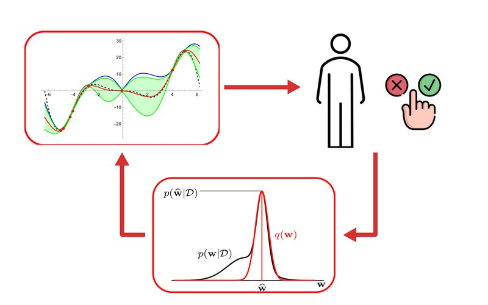
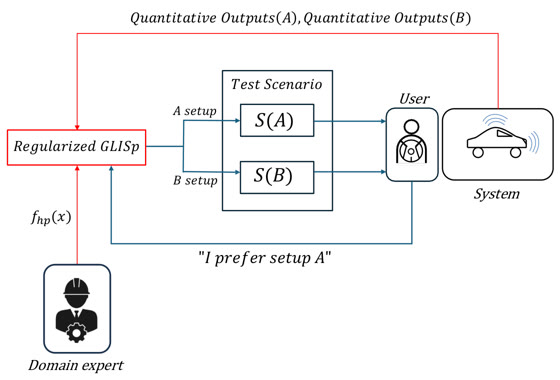
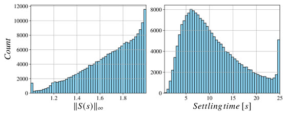
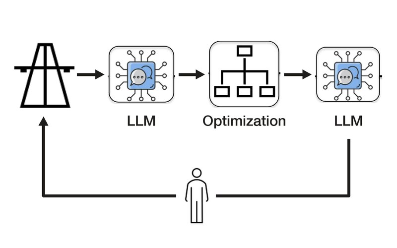

Reasoning and control in vision–language–action models.
I study how robot foundation models reason, and whether that reasoning actually controls what they do.
I am a PhD candidate in Information Technology at Politecnico di Milano, advised by Prof. Simone Formentin, and currently a Visiting Student Researcher at Stanford University's Autonomous Systems Lab with Prof. Marco Pavone.
My recent work looks at vision–language–action (VLA) models for driving and manipulation: whether their chain-of-thought is faithful to the policy, how to represent reasoning as a distribution over plans that can be sampled and steered, and why a model can perceive a hazard yet fail to act on it. I come to this from control and learning from human feedback, and I care about learning-based systems that are interpretable, steerable, and safe.
Does a model's reasoning drive its actions? Faithful chain-of-thought, plans as steerable distributions, and the gap between perceiving a hazard and braking for it.
Sample-efficient preference learning, from RLHF for language models to human-in-the-loop calibration of vehicle controllers.
Diffusion models that design stabilizing controllers, and LLM agents with optimization-backed decisions for highway operations.




Fine-tuning 4B-parameter vision-language-action models for driving on a 32× H100 cluster with PyTorch distributed training.
An agentic decision-support system (LangChain, RAG) with optimization-backed guarantees, deployed for highway radio operators to accelerate incident response.
Real-time point-cloud segmentation (PyTorch + ROS2) deployed on a full-scale autonomous race vehicle, contributing to the team victory at the Monza Circuit.